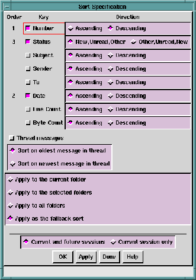

The
Sort ... option lets you specify the order in which mail
messages should be listed in the
Folder Contents area of the Main
window.
To specify the sort order of messages, click the
Sort ... option. The
Sort Specification window appears, in which you can:
- Specify the message sort order using up to eight
available sort keys.
- Specify the direction of the sort, either ascending or
descending.
- Specify a different sort key for each folder.
- Select the
Thread messages parameter to group messages
by subject-thread and sort each group by newest or oldest
message in the group.

The
Sort Specification window contains a row of toggle buttons, each
of which controls an associated sort key. Adjacent to each sort
key is a pair of radio buttons for controlling sort
direction-either ascending or descending. (For alphabetical
characters, ascending order is A to Z; descending order is Z to A.)
The radio buttons for the
Status key act differently, in that they
select between the sort orders
New,
Unread, and
Other and
Other,
Unread, and
New.
When you toggle
On a button that corresponds to a sort key, a
number appears in the
Order column to the left of the buttons. The
number indicates the precedence of the sort key. The first key you
toggle
On becomes key
1, the second becomes key
2, and so on.
Conversely, if you toggle a button
Off, the corresponding sort
key is removed and the number is removed from the
Order
column. The other sort keys are renumbered. You can specify any
or all eight sort keys and any order of direction in your sort
specification.
There are eight possible sort keys.
- Message number
- Select the
Number option to sort mail messages by number.
When you do this, the first mail messages to arrive have
the lower numbers. So, if you sort in descending
numerical order, the newest messages appear at the top
of the
Folder Contents area. If you sort in ascending
numerical order, the oldest messages appear at the top of
the
Folder Contents area.
NOTE:
This differs from sorting by
Date in that
Number
indicates the order in which messages were
received, while
Date indicates when a message
was sent. These usually result in the same
sort order, but not necessarily. Differences
result from variable delays in the mail
network and differences in clock time among
systems.
- Message status
- Select
Status to sort mail messages by status. The buttons
for the
Status key select between these two sort orders
New,
Unread, Other and
Other, Unread, New.
- Subject
- Select
Subject to sort mail messages alpha-numerically by
subject, as indicated by the message's
Subject: header.
For alphabetical characters, ascending order is A to Z;
descending order is Z to A.
- Sender
- Select
Sender to sort mail messages in alpha-numerically
by sender's name, as found in the message's
From:
header. For alphabetical characters, ascending order is A
to Z; descending order is Z to A.
- To
- Select
To to sort mail messages alphabetically according
to the name(s) in the
To: header. If you display mail
messages by the
To field in ascending order, a message
addressed "To:
adam@someplace.com" would be lower in
the message list than a message addressed
"To: bob@someplace.com".
- Date
- Select
Date to sort mail messages by the time and date the
message was sent, as indicated by the message's
Date:
header. If you display mail messages by date in
ascending order, the oldest messages appear at the top of
the message list.
NOTE:
This differs from sorting by
Number in that
Number indicates the order in which messages
were received, while
Date indicates when a
message was sent. These usually result in the
same sort order, but not necessarily.
Differences result from variable delays in the
mail network and differences in clock time
among systems.
- Number of lines
- Select
Line Count to sort mail messages by line count. If you
display mail messages by line count in ascending order,
the shortest messages appear at the top of the
Folder
Contents area.
A
line is counted as a string of characters ending with a
newline character.
NOTE:
For messages containing data other than
ASCII text, for example GIF or JPEG data,
the count of number of lines may not be
meaningful.
- Number of bytes
- Select
Byte Count to sort mail messages by number of
bytes, or characters. If you display mail messages by byte
count in ascending order, the messages with the lowest
byte count appear at the top of the
Folder Contents area.
Only the characters in the message body are counted, not
the characters in the headers.
NOTE:
Some mail messages contain a
Content-Length: header. This is a good
indication of the number of bytes in a
message, but it is not always accurate.
Ishmail
counts the number of bytes instead of relying
on a
Content-Length: header, if present.
Select the
Thread messages parameter to sort messages by subject
thread. Messages will be grouped in the message list according
to their subject line (from the
Subject: mail header). If you sort
in ascending order, the oldest subject is shown first.
To illustrate how this works, consider this example: You have 3
messages in your folder, each with a different subject line.
Applying the
Thread messages parameter has no apparent,
immediate effect. The messages remain sorted by arrival
sequence. When new mail with a unique subject arrives it is
added to the end of the list, so the list still appears sorted by
number. However, when new mail arrives containing a subject
line that matches an existing message, the new message appears
inserted in the list just after the message with the same subject.
Sort keys are added in the order you select them. Sort criteria is
based on this order and on the direction (ascending or
descending) of each sort key.
For example, to specify sorting first by
Date, descending order
(that is, latest message at the top of the message list), then by
Status (new messages first, followed by unread messages, then
other messages), you would:
- Select (toggle
On) the
Date sort key. A
1 appears in the
Order column next to the toggle button.
Click
Descending to select that direction.
- Next, select (toggle
On) the
Status sort key. A
2 appears in
the
Order column next to the toggle button.
Click
New,
Unread,
Other to select that direction.
- Apply your changes.
NOTES:
- For the
Date field, the value of the date string
is first resolved into a number before
comparing, so that values in different formats
(for example, Dec 01 versus December 1) will
sort correctly.
- The
Date and
Number keys have roughly the
same meaning since messages are numbered
sequentially in the order received. The
Date
indicates the time of day and date the
message was sent. The
Number indicates order
of arrival in your In-Box. However, there may
be subtle differences due to propagation
delays within the mail network or differences
in the time of day clocks on various machines.
A message sent later than another (thus
having a newer date) may actually arrive
sooner (thus having a lower, older sequence
number).
When you specify a sort for a folder, click the appropriate radio
button in the box below the sort keys to make the sort apply to:
- The current mail folder, as displayed in the
Main window
Folder Contents area.
- All mail folders selected in the
Main window
Open Folders
area.
- All mail folders, overriding any other sort definitions.
- All mail folders which don't otherwise have an explicit
sort order defined.
You make this selection by clicking one of the radio buttons in the
box below the sort keys.
Apply or cancel your changes using the row of buttons across the
bottom of the window. See
Applying Your Changes.
Preceding Section: Folder Preferences Option
Following Section: Help Menu
Parent Section: Main Window Options Menu
Contents of Ishmail User's Guide